Games
Favorites
 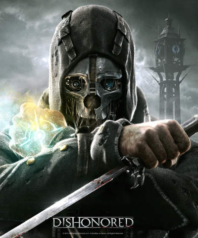 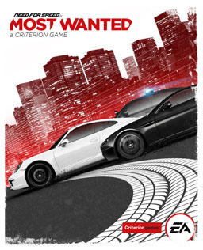 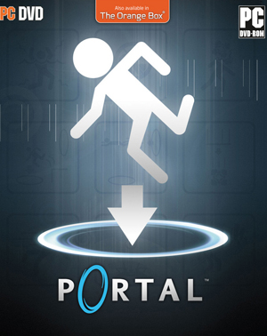 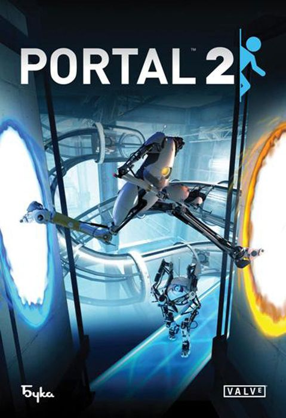 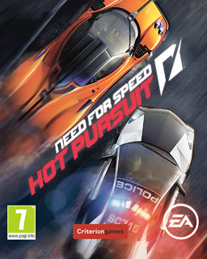 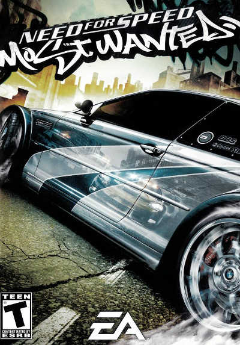
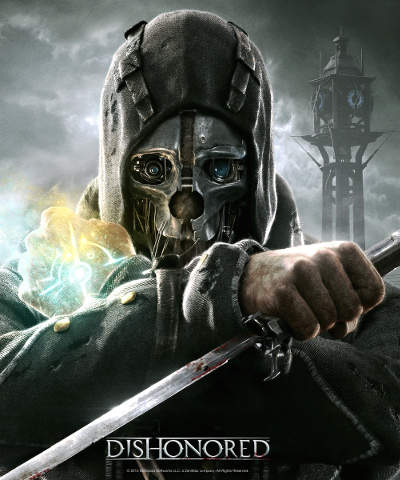 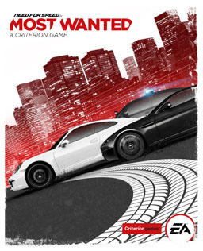 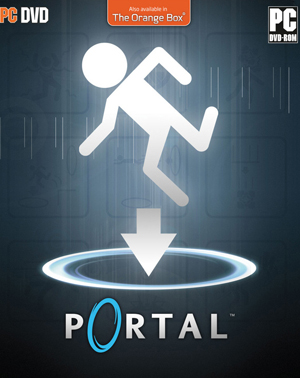 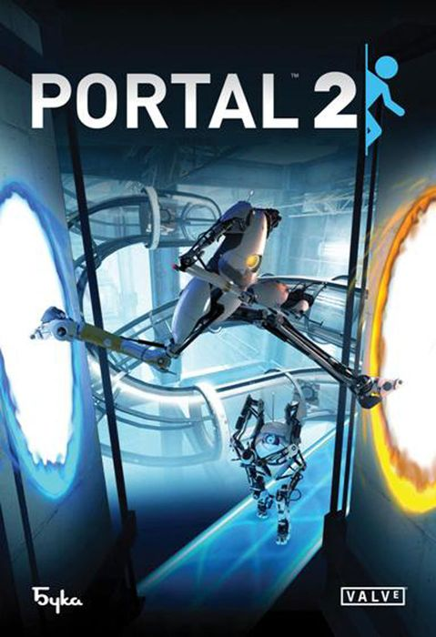 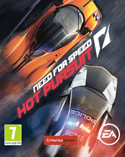 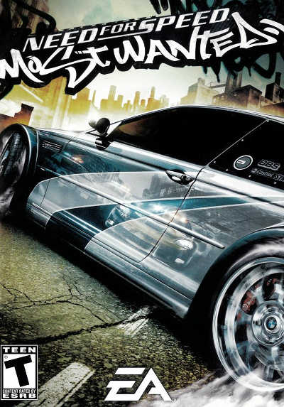 Here's a list of all the games that I played and have completed (in no particular order).
- BioShock2
- BioShock
- Outlast
- Soma
- Watch Dogs
- Dishonored
- Need for Speed: Most Wanted (2012)
- Portal
- Portal 2
- Need for Speed: The Run
- Need for Speed: Hot Pursuit (2010)
- Need for Speed: Shift
- Need for Speed: Undercover
- Need for Speed: Carbon
- Need for Speed: Most Wanted
- Assassin's Creed IV: Black Flag
- Assassin's Creed III
- Assassin's Creed: Brotherhood
- Assassin's Creed II
- Assassin's Creed
- Mass Effect 3
- Mass Effect 2
- Mass Effect
- Halo: Combat Evolved
- Need for Speed: Porsche Unleashed
- Serious Sam: The First Encounter
- Need for Speed II